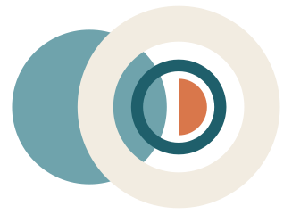

Base Accounts, Net New Business und Existing Business

(= Base Business)
Ausgangsbestand: Konten, die zum Stichtag 30.06.2026 bei den Agenturen aktiv waren. Danach werden alle zwischen den beiden Stichtagen neu verknüpften Accounts am 01.01. bzw. 01.07. zu Base.
Neu verknüpft zwischen zwei Stichtagen. Bei Verknüpfung < 3 Monate alt UND Kundendomäne zuvor nicht auf Microsoft Advertising aktiv. Bis zum nächsten Stichtag Net New.
Neu verknüpft zwischen zwei Stichtagen, ohne die Net-New-Kriterien zu erfüllen, z. B. Konto ≥ 3 Monate alt oder Kundendomäne bereits aktiv. Bis zum nächsten Stichtag Existing.
Ob die Agentur neu akquiriert wurde oder bereits im Bestand ist, spielt für Net New / Existing keine Rolle.
Die Klassifizierung erfolgt immer auf Account-Ebene.